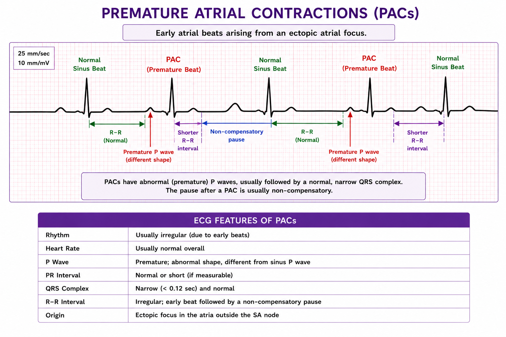
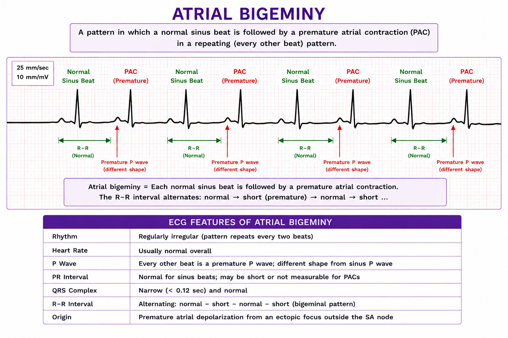
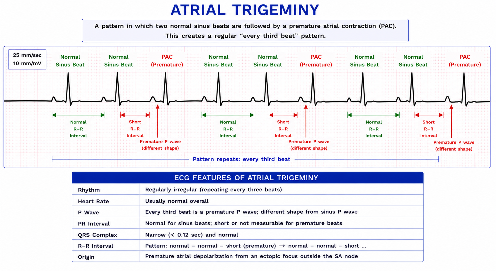
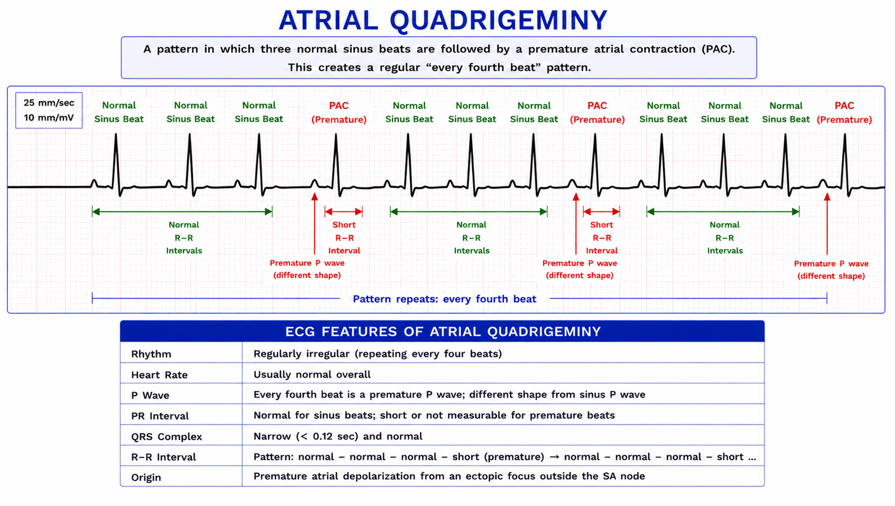

PREMATURE ATRIAL CONTRACTIONS (PACs)
Premature Atrial Contractions (PACs) are early ectopic beats originating from an atrial focus outside the SA node.

1. PAC Couplet
- 2 consecutive premature atrial contractions

2. PAC Triplet
- 3 consecutive premature atrial contractions

3. PAC Run
- 4 or more consecutive premature atrial contractions

4. Atrial Bigeminy
- Every 2nd beat is a premature atrial contraction
- Normal - premature - compensatory pause - normal - premature

5. Atrial triplet
- Every 3rd beat is a premature atrial contraction
- Normal - normal - premature - normal - normal - premature

6. Atrial Quadrigeminy
- Every 4th beat is a premature atrial contraction
- Normal - normal - normal - premature - normal - normal - normal - premature

PACs and Atrial